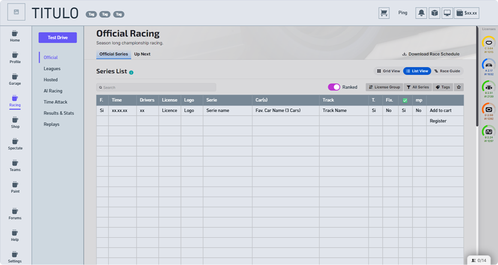
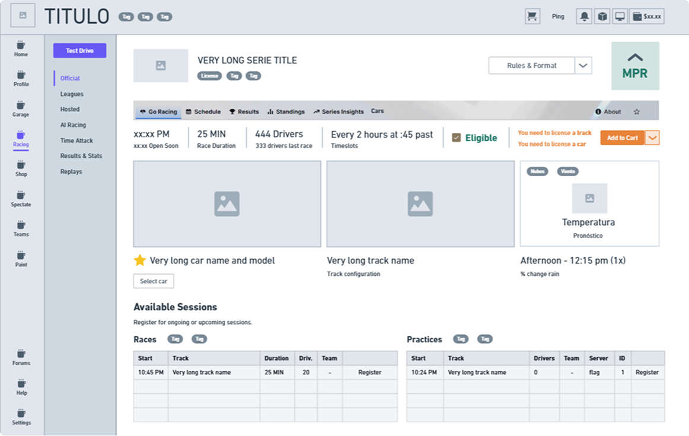
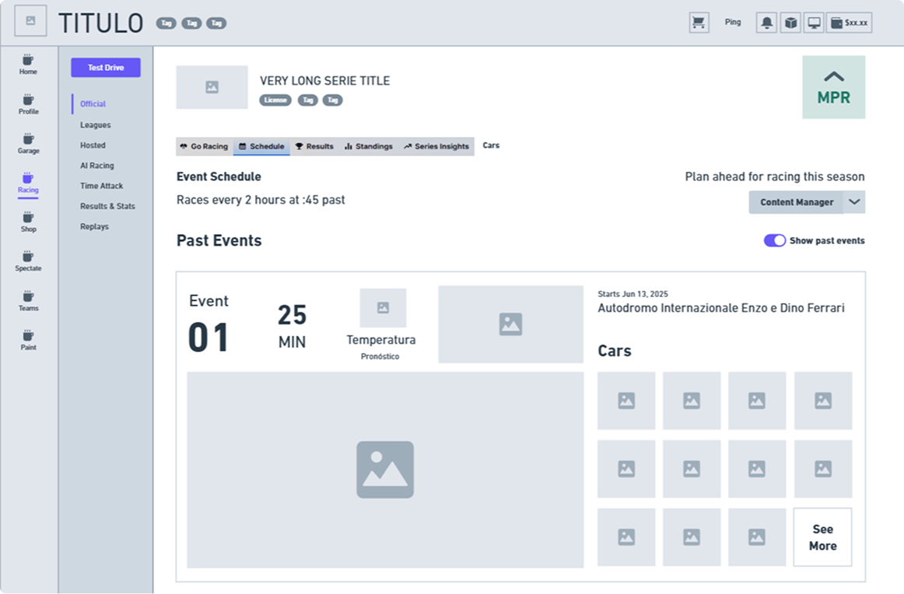

Ver Superficie
Ver SuperficieWireframes en Media
Empezando el rediseño
 Lista de series
Lista de series

- Arquitectura nueva, carrito de compras agregado y ajuste en la información en las columnas.
 Detalles de serie
Detalles de serie

- Añadido feedback visual “MPR” que significa que participar en esta serie aumenta la licencia del usuario.
- “Rules & Format” colapsado en un dropdown.
- Rediseñado la disposición de información del tiempo, pilotos, y CTA.
- Rediseñado las tablas de prácticas y carreras con sus horarios.
- Rediseñado en 3 columnas las cards de autos, pistas y clima.
 Calendario de la serie
Calendario de la serie

- Rediseñado las cards de eventos pasados, actuales y futuros.
- “Content Manager” colapsado en un dropdown.
Sección de autos

- Se añade esta sección para visualizar los autos que compiten.
- Se agrega aquí también la opción de elegir el auto como favorito.
Siguiente elemento UX
Pero también están...